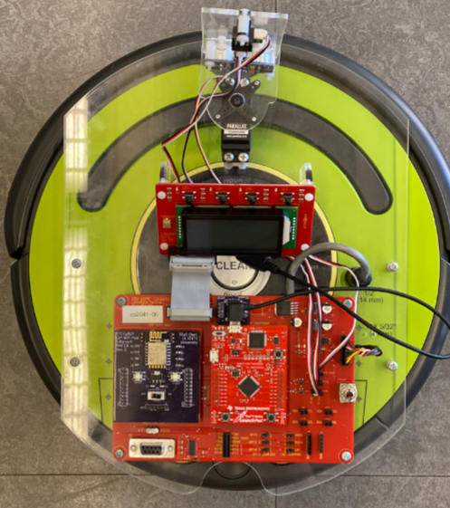
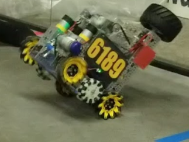

B.S. Software Engineer
Minor Cyber-Physical Systems
I am a student at Iowa State University studying Software engineering. I am interested in embedded systems and programming things like sensors, controllers, and autonomous robot movements. I am also interested in AI and using it to help make people's lives better.
I have developed several programming projects for various platforms and purposes. Some are personal, while others are work or school related. Here, I have compiled a short list of a few of the things I have completed.

Embedded software lab and final project using an iRobot Create 2 platform with an added Tiva C Series TM4C123G Launchpad. Focused on low-level programming in C, MCU register control, sensor integration, communication protocols (I2C and UART), and autonomous movement logic. The final project was to search for the largest obstacle, which we dubbed "Godzilla" and then to ram the CyBot into it to knock it down. To do this we had to navigate the environment, which had multiple obsticales and pits, requiring our sensors and algorithms to work together seamlessly.

FIRST Tech Challenge (FTC) robot code for the 2021-2022 season. Being the lead programmer on my team, I implemented odometry, autonomous path planning and tracking, 360° obstacle detection through lidar, autonomous obstacle avoidance, field-oriented drive using mecanum wheels, driver control enhancement features, and game element detection using a webcam.
This is a final project that I developed for a web development class in Iowa State University as part of a two man team. It is designed to run on a raspberry pi with an arduino, waterlevel sensor, and DHT11 humidity sensor attached. The raspberry pi hosts a database and a backend server that holds and retrieves the data from the sensors. It also hosts a react webpage for the frontend that lets the user see the realtime data as well as historical data charts for the last 8 minues.
Impulse Analyzer is a hybrid self-hosted analytics platform that lets teams query their data, formulate explanations, and generate graphs by using natural language and AI. It connects directly to a company's existing databases and services to deliver fast, contextual insights without moving your data to third-party systems. It also integrates with company handbooks/manuals and employee calendars to give even more power to the user.
This is the debut app for a company that I cofounded, Impulse AI, and is an android mobile app that utilizes a large language model API from OpenAI to generate responses to text messages. The user can tailor the response to their needs by selecting the tone, mood, position, and other options. AI Reply is available on the Google Play store.
You can reach me at jschulmeisterv@gmail.com
Find out more on my LinkedIn
View all my Public Projects on GitHub
Check out Impulse AI, the company I cofounded